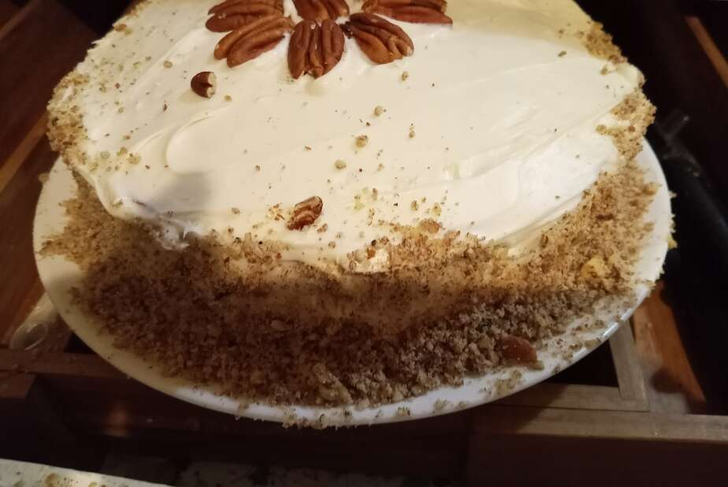

Carrot Cake III

Description
This is the best fucking recipe. I've tried many carrot cakes, and this is my favorite recipe. If you don't like pecans, feel free to leave them out. Also, make sure to add plenty of carrots. Do not cook with animals in the room as they tend to get frisky.
Ingredients
- 4 eggs
- 1 ¼ cups vegetable oil
- 2 cups white sugar
- 2 teaspoons vanilla extract
- 2 cups all-purpose flour
- 2 teaspoons baking soda
- 2 teaspoons baking powder
- ½ teaspoon salt
- 2 teaspoons ground cinnamon
- 3 cups grated carrots
- 1 cup chopped pecans
Steps
- Step 1
Preheat oven to 350 degrees F (175 degrees C). Grease and flour a 9x13 inch pan.
- Step 2
In a large bowl, beat together eggs, oil, white sugar and 2 teaspoons vanilla. Mix in flour, baking soda, baking powder, salt and cinnamon. Stir in carrots. Fold in pecans. Pour into prepared pan.
- Step 3
Bake in the preheated oven for 40 to 50 minutes, or until a toothpick inserted into the center of the cake comes out clean. Let cool in pan for 10 minutes, then turn out onto a wire rack and cool completely.
- Step 4
To Make Frosting: In a medium bowl, combine butter, cream cheese, confectioners' sugar and 1 teaspoon vanilla. Beat until the mixture is smooth and creamy. Stir in chopped pecans. Frost the cooled cake.
Return to main page